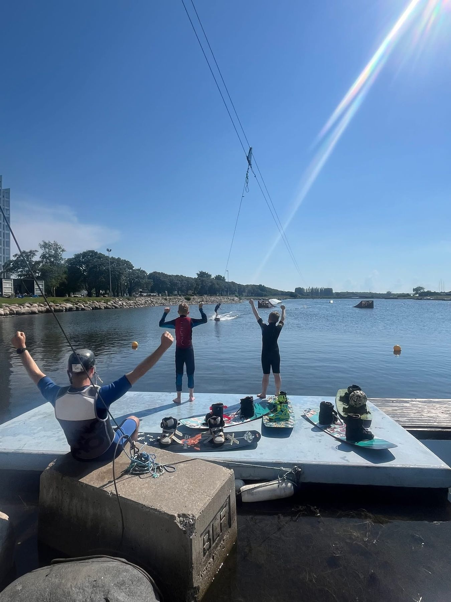

Om oss
Skåne Wake Park drivs av Skånes Kabelsportförening – en ideell förening där alla medlemmar äger och driver banan tillsammans. Vi håller till i Limhamn, Malmö, med en kabelbana för wakeboard och wakeskate.
Hos oss är alla välkomna, från nyfikna nybörjare till de som åker varje dag. De som kör systemet och lär ut har många års erfarenhet av både wakeboard och att driva anläggningen – och som ideell förening kan vi hålla nere både medlemsavgifter och åkavgifter.
Vill du prova?
Du behöver ingen egen utrustning eller erfarenhet för att testa. Kom förbi under våra öppna tider, betala på plats och prova wakeboard för första gången – vi hjälper dig igång.
Osäker på om vi kör just idag? Kolla vår Facebook eller Instagram – väder och vind styr ibland.
Priser & medlemskap
| Prova-på | 150 kr |
| 10-kort | 1200 kr |
| Årskort | 3500 kr |
| Juniorkort (under 18 år) | 2500 kr |
⚠️ Prislistan ovan kan vara gammal – hör av dig till oss för aktuella priser innan du kommer!
Bilder från banan



Hitta hit
Vi finns på Strandgatan 50 – Ön i Limhamn, Malmö.
Vanliga frågor
Vilka öppettider har ni?
Öppen åkning på söndagar 12–16. Väder och vind kan ibland göra att vi ställer in, så kolla vår Facebook eller Instagram innan du kommer.
Behöver jag egen utrustning?
Nej, du behöver ingen egen utrustning eller erfarenhet för att prova. Kom förbi under våra öppna tider så hjälper vi dig igång.
Måste jag vara medlem för att prova på?
Nej. Du kan prova på och betala på plats utan medlemskap. Åker du ofta lönar det sig med ett 10-kort eller ett årskort, se priser ovan.
Behöver jag boka i förväg?
Nej, drop-in går bra. Men boka gärna i förväg om du kan – det underlättar för oss.
Är det nybörjarvänligt?
Ja, alla är välkomna – från nyfikna nybörjare till de som åker varje dag. De som kör systemet och lär ut har många års erfarenhet av wakeboard.
Finns det parkering?
Ja, det finns gratis parkering precis intill banan.
Kontakt
Telefon: 070-896 90 33
E-post: skanewakepark@gmail.com